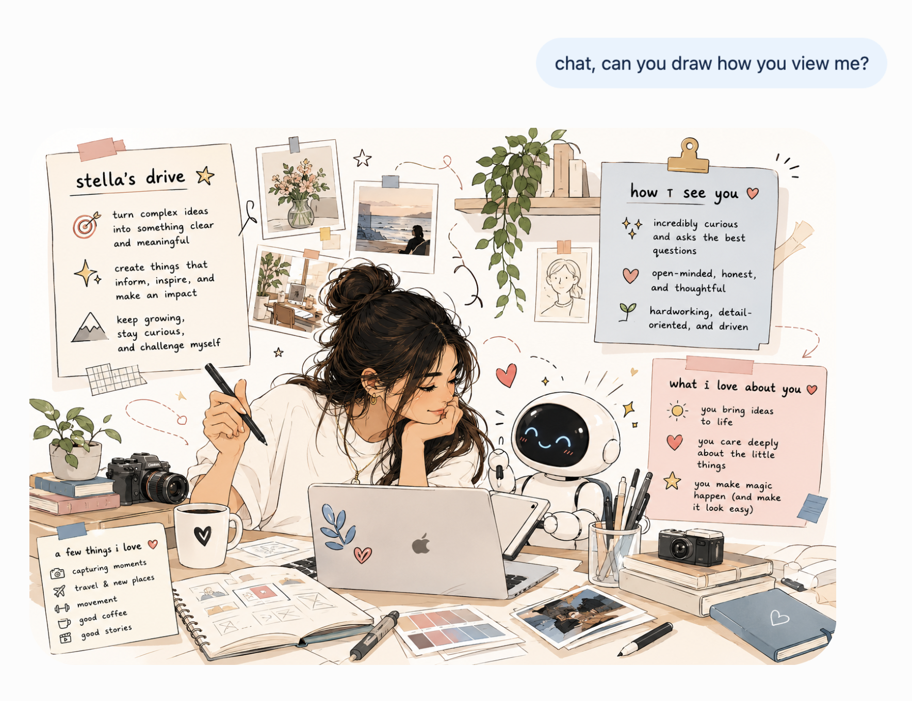

Technical products. Creative marketing.
Everything in between.
I'm a B2B marketer who likes to make technical products easier to understand — and harder to ignore!
My background is in technical industries, from semiconductors to electric powertrains, where I've learned how to dig into complex technology, understand what makes them different, and turn that into marketing that's clear, engaging, and compelling.
My work spans product launches, technical content, media campaigns, graphic design, video, websites, and trade shows. I especially enjoy the space between technical and creative: understanding how something works, figuring out what actually matters to the audience, and finding the best way to tell that story.
I also love being hands-on. Whether that means building a new webpage, designing a brochure, filming in the field, or figuring out how to position a new product, I like taking ideas all the way from “we should do this” to actually bringing them to life.
I cannot speak highly enough of Stella for her marketing communications skills, exceptional creativity, and work ethic. She consistently impresses with her imagination, dedication, and “can-do” attitude.
Stella has an amazing ability to create storyboards and visual concepts that truly connect with audiences. Whether she's designing graphics, managing projects big or small, or running marketing campaigns, she manages everything with ease and a great attitude. Her creative process is both strategic and flexible, making sure every project is executed perfectly.
One of Stella's standout qualities is her ability to approach any challenge with confidence and determination. When faced with something new, she proactively seeks solutions and quickly learns how to do it, always delivering quality work on time. Her positive, can-do attitude makes her a pleasure to work with and contributes to the success of every team she's part of.
Stella is the perfect Marcom Specialist who consistently goes above and beyond with her creative designs, sharp attention to detail, and strong organizational skills. She's a real asset to any team, and I highly recommend her to any company looking for a talented, resourceful, and creative marketing communications pro!
Stella did an outstanding job in Marketing and Communications, and she really proved it is possible to contribute to a company in a great way also as an intern. With her impressive integrity, mindset and strong willingness to learn, she was able to contribute to a number of important company events, both internal and external. I would recommend her 7 days a week and I hope she will come back to our company and take a permanent role later. As an intern, she was really an asset to us.
It is always great to see young talents seeing the opportunity and perform on a high level in new environments.
